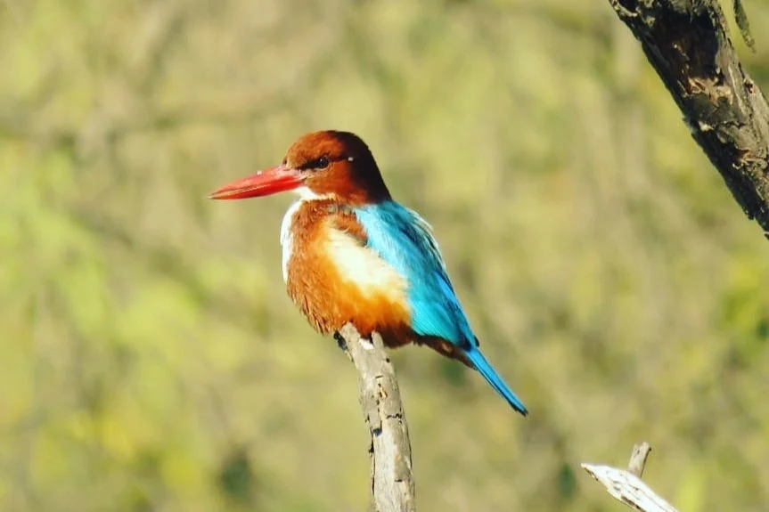

A WORLD
ALONGSIDE OURS.
A brightly coloured bird and two monkeys share the quiet geometry of a branch. A new pair of encounters from the companion memorial.

Two branches. Different kinds of presence.
A branch is a small place within a much larger environment. It can hold one vivid figure apart from its background, or support two bodies sitting close together. These photographs ask us to attend to posture, colour and contact. They offer visible encounters with animals without pretending to describe a whole habitat or explain a private moment. The pleasure lies in how much a single perch can contain.
One clear note of blue
The bird’s blue wings and back stand out against the soft green behind it. A reddish bill extends in one direction while the tail continues the line in another. The narrow perch is almost a vertical mark beneath the body. Look at the edges: the bright outline makes the bird immediately legible, while the background remains a field of softened branches and leaves. The photograph draws its energy from that difference in sharpness, as much as from the colour itself.
Take another look +
Trace the bill, back and tail as one continuous outline. Then return to the small point where the feet meet the branch.
The space they share
Two monkeys sit close together on a broad branch. Their warm brown coats relate to the bark and the tangled branches around them, so the faces and the points of contact become the strongest anchors. A hand rests near a shoulder; another reaches across the space between the bodies. We can observe those gestures without assigning a relationship or emotion. Compared with the bird’s distinct outline, this frame creates a more interwoven picture of bodies, tree and surrounding foliage.
Take another look +
Start with the faces, then follow the arms. Notice how the branch supports the composition as well as the animals.
These photographs extend the selection from the original memorial. Titles and observations are descriptive; locations and capture dates have not been established.
Explore all 31 photographs